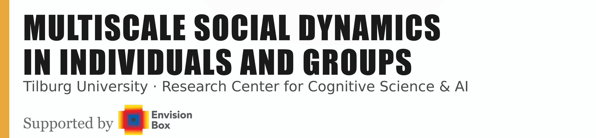

Handbook for MDIG2026 Summer School in Tilburg
Scripts for processing and analysis

Overview
Dear participants,
this handbook collects all scripts associated with the program of MDIG2026 Summer School. You will find here introduction of the datasets you will be working in your group projects, scripts that process these datasets into analyzable time series and features and finally, all scripts associated with the lectures.
The two datasets that we picked for this year are:
- Balance Corpus (Li, Yang, Fuchs & Aussems, 2026)
- PARSEL dataset (Hrkalovic, Dudzik, Balliet, Hung, 2024)
Each of these scripts have their own cheatsheet to help you get started with the data available for the respective corpus.
Setup
[here info about envs]
Program
| Time | Mon · July 13 Datasets, Data Collection & Multimodal Capturing | Tue · July 14 Multimodal Data Analysis | Wed · July 15 Multiscale Intra- & Interpersonal Coordination Dynamics | Thu · July 16 Masking Day | Fri · July 17 Final WG Presentations |
|---|---|---|---|---|---|
| 09:30 |
Registration
|
||||
|
10:00 – 10:30 |
Introduction to Summer School & Working Groups Wim Pouw & Travis Wiltshire |
Talk 4: Overview of State of the Art of Multimodal Analysis Alex Paxton |
Talk 5/Tutorial: Overview of Multiscale Theory and Methods (WMS, MFDFA) Travis Wiltshire |
Talk 8 & Tutorial: Masking Audio and Video Babajide Owoyele |
Working Group Project (Final) |
|
10:30 – 11:30 |
Talk 1: How to Build a Mobile Multimodal Lab Davide Ahmar & Šárka Kadavá |
Tutorial: Specific Analysis Tools Alex Paxton (e.g. ALIGN r package) |
|||
|
11:30 – 12:30 |
Talk 2: Overview of Datasets and Measures Organizers |
Talk 6: Intrapersonal coupling using empirical mode decomposition Wim Pouw |
|
||
|
12:30 – 13:30 |
— Lunch —
|
— Lunch —
|
— Lunch —
|
— Lunch —
|
— Lunch —
|
|
13:30 – 14:00 |
Use Cases Talk (15 min) Tiffany Matej Hrkalović Using ML to extract Facial & Acoustic Features to predict Person Perceptions |
Use Cases Talk (15 min) Šárka Kadavá The role of physical effort in resolving misunderstanding |
Use Cases Talk (15 min) Andrea González Sánchez Multimodal coordination during live music |
Recap: Masking Babajide Owoyele |
Working Group Final Presentations |
|
Talk 3/Tutorial: Tools & Application James Trujillo, Anna Palmann Kinematics, Acoustic Features, Transcription & Gesture Detection ⏱ 13:45 – 15:00 |
Use Cases Talk (15 min) Marcella Hoogeboom Social coordination in high-stakes teams under pressure |
Use Cases Talk (15 min) Marijn Hafkamp Motor learning in a collaborative ball-on-board task |
|||
|
14:00 – 15:00 |
Work in Project Groups |
Work in Project Groups |
Work in Project Groups |
||
|
15:00 – 16:00 |
Work in Project Groups + Sharing, Q&A & stage-setting |
Work in Project Groups |
Talk 7: Multi-Scale Dynamical Approach in Brain Signals Annie Bryant (online) |
Work in Project Groups |
|
|
16:00 – 16:50 |
Work in Project Groups + Sharing, Q&A & stage-setting |
Work in Project Groups |
Work in Project Groups |
Work in Project Groups |
|
|
16:50 – 17:00 |
Closing (10 min)
|
Closing (10 min)
|
Closing (10 min)
|
Closing (10 min)
|
|
| Evening |